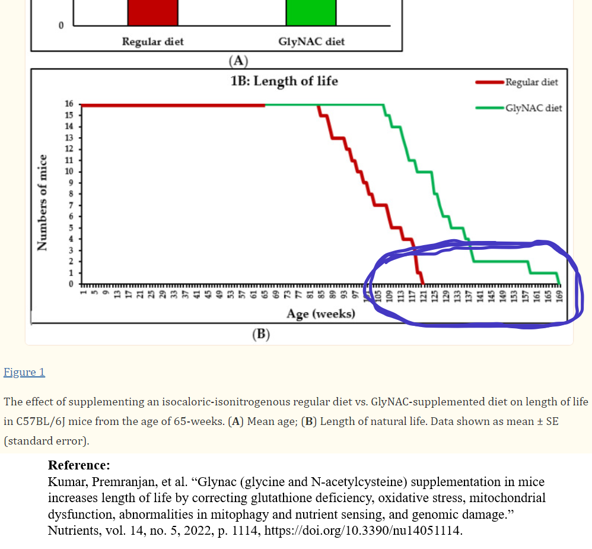

The following is a discussion of something with exceptional implications for healthspan & longevity. Research involving both humans and mice have demonstrated the potent effect that what researchers refer to as "GlyNAC" can have on health. This term is referring to two "conditionally indispensable" amino acids that the body can produce on its own (moreso in younger individuals): glycine & cysteine—in this case the "supplement form" ubiquitously called "NAC," technically "N-acetyl-L-cysteine," which is not found in food (although "L-cysteine" is)—two of the three molecules that make up the ubiquitous and important endogenously-produced molecule 'glutathione.'
When it comes to risk:reward ratio, based on intangibles like demonstrated efficacy and safety, this intervention is a lucid standout. Both glycine & cysteine can be produced endogenously, however this tends to decrease with age. A line in the sand would be 45 years old, so this would be most beneficial when at or exceeding that age, with older ages presumably benefitting from larger doses. Even at the chronological age of 45, however, ideally one would be much younger biologically, which is where proactive interventions like this could still turn out to be beneficial. Given the stipulation of plans on starting to take at an older age, every critical thinking expert I've heard from in the longevity space puts it among the BEST supplements in existence, having as yet only positive things to say about it.
I'm not aware of other supplements getting such results. This isn't a combination of multiple different supplements, or being in tandem with other interventions like exercise or fasting, this is simply two amino acids that occur naturally in foods.

When taking these two amino acids, the researchers demonstrated a +24% lifespan extension in mice, and in humans brought multiple hallmarks of aging down to—in many cases—identical to or better than someone in their 20s in as little as "16 weeks" of supplementation. In the case of humans they were subjects in their 70s, and the mice did not start taking it until they were what has been considered to be a similar age.
Details
Dosage was high in research studies. A consensus suggestion from various sources is taking between 1-2g per day, with age being a factor. By weight, there are about 2.174x as many molecules of Gly as there are of the larger N-acetyl-L-cysteine, resulting in many more molecules of Gly for the same weight. Extra glycine may be beneficial, but not needed to synthesize glutathione which is implicated to be the driver of the substantial benefits. I checked all of the products on Amazon that combine both, and they vary in dosage from 0.6g to 2.1g.
In the "pilot" study, the dosage based on body weight was ≈ 0.045 g/lb (or ≈ 0.1g/kg) Gly & ≈ 0.06 g/lb (or ≈ 0.13g/kg) N-acetyl-L-cysteine (e.g. 170 lbs ≈ 7.7g Gly + 10.19g N-acetyl-L-cysteine).
In the later study the participants took ≈ 0.045g/lb (0.1g/kg) body weight each (e.g. 170 lbs ≈ 7.7g Gly + 7.7g N-acetyl-L-cysteine).
The results of distinguishing between these two approaches to restoring glutathione to youthful levels is easily observed in the data. Oxidants can be important to health and part of a balance, considered to play a role in signaling and reason for benefits resulting from exercise.
The following are research articles in focus:


Observation of results
Factors that normally go up during aging, such as mitochondrial dysfunction, genomic damage, and inflammatory cytokines were brought, in some cases, identical to a "young adult" after "16 weeks" (measured at "24 weeks" in the "pilot" study) of taking the amino acids, there were even some examples where it was improved beyond that. As one out of many biometrics, there was an enormous effect on insulin, which is a factor that may be associated with most forms of disease.
Benefits (an overview of advantages of this approach to lifespan increase & health)
Benefits compared to alternative interventions:
•Convenient & relatively inexpensive
•Both amino acids are found naturally in foods (although N-acetylcysteine is not)
•No reported side effects in studies with participants taking large doses
•Demonstrated efficacy and not simply a logical framework
•No dietary requirements to benefit
•Does not require a prescription like metformin or rapamycin
•Humans/mice in studies they did not start taking it until later in life
•Taking building block precursors addresses some criticisms of supplements in general
•Can be taken in different forms such as collagen peptides and glycine betaine
•Does not preclude other health interventions
Personally, I'm fairly OCD when it comes to venturing outside natural dietary nutraceuticals. The everpresent room for improvement is like an art form analogous to a chess game to me — where moving the appropriate pieces in a purposeful order and often in a prophylactic response to a given context, can be great at giving holistic benefits and circumvent a need to go beyond that, empowered by concepts like synergies and circadian rhythm & microbiome considerations, and topics for other articles. These two amino acids are a variable in normal diet, so this meets that criteria for me.